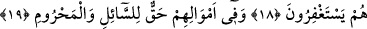
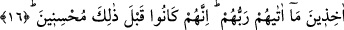

TAKVA SÂHİBİ KİMSELERİN
VASIFLARI
15. Şüphesiz ki Allah’a isyandan sakınanlar cennetlerde ve pınar başlarında
bulunacaklar.
16. Rablerinin kendilerine verdiğini alarak. Kuşkusuz onlar, bundan önce dünyada
güzel davrananlardı.
17. Geceleri pek az uyurlardı.
18. Seher vakitlerinde de istiğfar ederlerdi.
19. Mallarında, muhtaç ve yoksullar için bir hak vardı.
Küfür, mâsiyet, cehâlet ve mâsivâya meylden korunup îman, tâat, ma’rifet ve Yüce
Hazret’e teveccüh ile muttasıf olanlar, mâhiyeti tam olarak bilinemeyen
cennetlerdedirler. “Cennat” kelimesinin nekre olarak getirilmesi ta’zim içindir. Ayrıca
bunun teksir/çokluk için olması da câizdir. Nitekim “ibil” ve “ğanem” kelimelerinin
nekre gelmesinin “çokluk” ifâde edip onunla “onun pek çok devesi ve pek çok koyunu
vardır” mânâsının kasdedilmesi gibi.
Araplar bahçeye de “cennet” adı verirler.
“Günahlardan sakınan o müttakîler pınar başlarında bulunacaklardır.” Yâni onlar
akan ırmakların, nehirlerin başlarındadırlar. Nehirler onların göreceği bir mesafede
olup burada onların nehrin içinde değil de kenarlarında olduğu kasdedilmiştir.
Sehl der ki: Müttakî, dünyada rızâ bahçelerinde dolaşır ve ünsiyet nehirlerinde yüzer.
Bir âlim âyetle ilgili şu izahı yapar: Günahlardan sakınan bahtiyar kullar dünyada
kalp bahçelerinde dolaşır, hikmet ırmaklarında yüzer. Âhirette ise lütuf cennetlerinde
dolaşır, kerem ırmaklarında yüzer. Onlar için bugün münacât/gönülden yakarışlar ve
kurubât/Allah’a yaklaştıracak ameller, yarın ise necât/cehennemden kurtuluş ve
derecât/cennetin dereceleri vardır.
16. Rablerinin kendilerine verdiğini alarak. Kuşkusuz onlar, bundan önce dünyada